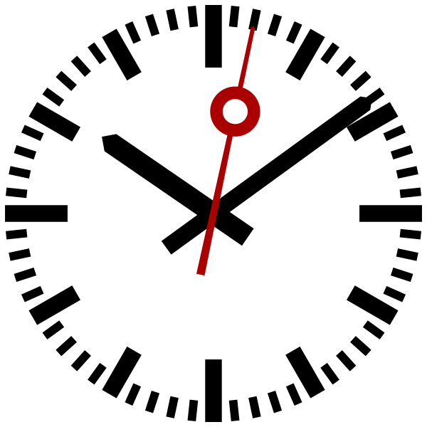
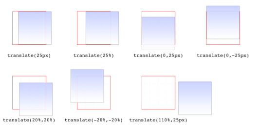
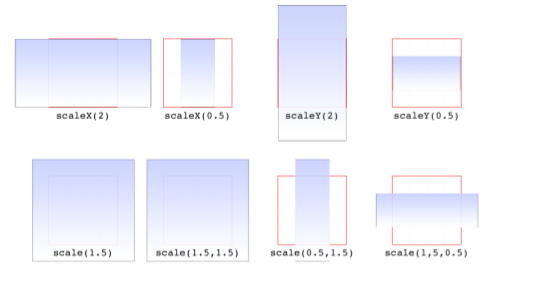
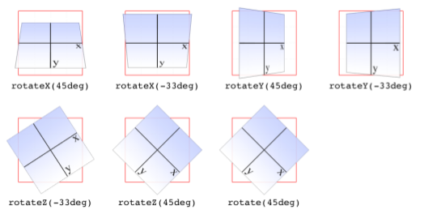
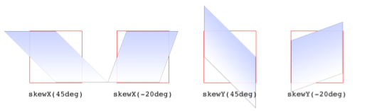
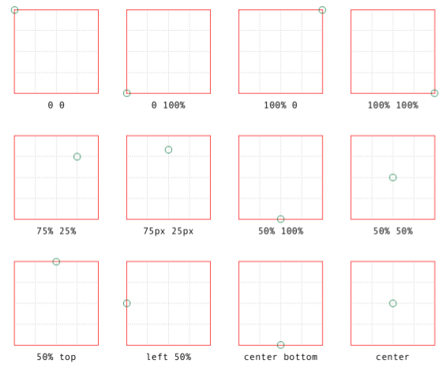

Dodaj trzy obiekty do pliku.
Wykorzystując STYL wewnętrzny dokonaj następujących transformacji:
Wykorzystując STYL wewnętrzny dokonaj transformacji 3 obiektów:
Wykonaj zegar analogowy. Stwórz wskazówki (minuta, godzina, sekundnik)

Przeczytać i zrozumieć artykuł
Transformacje:
Transformacje CSS realizowane są przy wykorzystaniu :
Właściwość CSS transform przyjmuję listę transformacji.
Zadanie - jaka jest kolejność wykonywania? Spróbuj wykonać: przesunięcie i rotację o 45 stopni oraz rotację i przesunięcie.

x,y,z - długość np. px, cm, mm, ..., %

x, y, z - liczba

x - kąt deg, rad

x - kąt

Ma zastosowanie do rotacji, pochylenia, skali. Nie ma zastosowania do przesunięcia.
Przykładowy plik CSS
rect {
fill: red;
stroke: blue;
stroke-width: 3
}
Dokument SVG
<?xml version="1.0" standalone="no"?>
<?xml-stylesheet href="mystyle.css" type="text/css"?>
<!DOCTYPE svg PUBLIC "-//W3C//DTD SVG 1.1//EN" "http://www.w3.org/Graphics/SVG/1.1/DTD/svg11.dtd">
<svg xmlns="http://www.w3.org/2000/svg" version="1.1"
width="10cm" height="5cm" viewBox="0 0 1000 500">
<rect x="200" y="100" width="600" height="300"/>
</svg>
Przykładowy plik SVG
<?xml version="1.0" standalone="no"?>
<!DOCTYPE svg PUBLIC "-//W3C//DTD SVG 1.1//EN"
"http://www.w3.org/Graphics/SVG/1.1/DTD/svg11.dtd">
<svg xmlns="http://www.w3.org/2000/svg" version="1.1"
width="10cm" height="5cm" viewBox="0 0 1000 500">
<defs>
<style type="text/css"><![CDATA[
rect {
fill: red;
stroke: blue;
stroke-width: 3
}
]]></style>
</defs>
<rect x="200" y="100" width="600" height="300"/>
</svg>
Warto zauważyć, że reguły znajdują się w sekcji CDATA.
Przykładowy plik SVG
<?xml version="1.0" standalone="no"?>
<!DOCTYPE svg PUBLIC "-//W3C//DTD SVG 1.1//EN"
"http://www.w3.org/Graphics/SVG/1.1/DTD/svg11.dtd">
<svg xmlns="http://www.w3.org/2000/svg" version="1.1"
width="10cm" height="5cm" viewBox="0 0 1000 500">
<rect x="200" y="100" width="600" height="300"
style="fill: red; stroke: blue; stroke-width: 3"/>
</svg>
Gdy używamy kopii obiektu, można wykorzystać konstrukcję:
<use xlink:href="#id"/>
Należy jednak dodać przestrzeń nazw (namespace) xmlns:xlink="http://www.w3.org/1999/xlink"
{kind=link}
{kind=link}
{kind=link}
{kind=link}